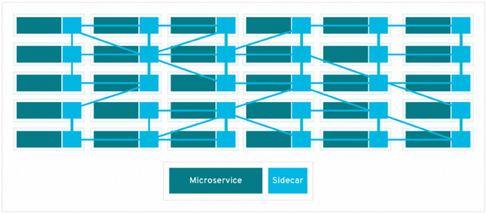
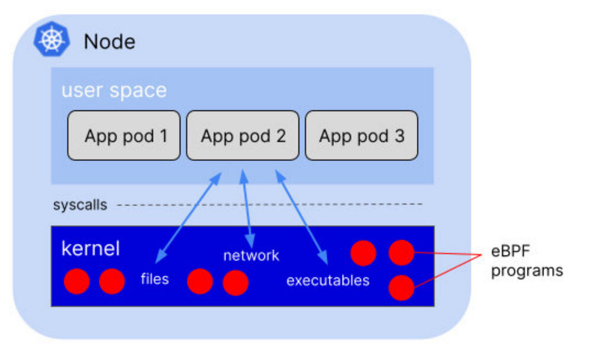
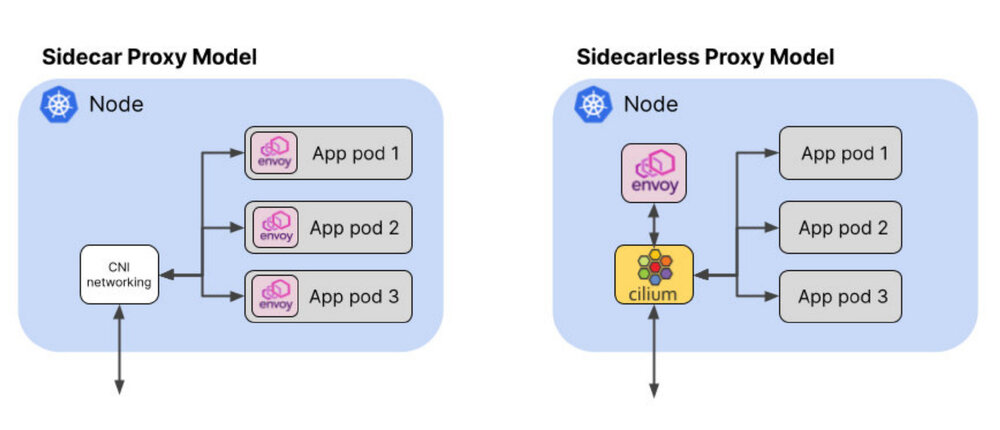
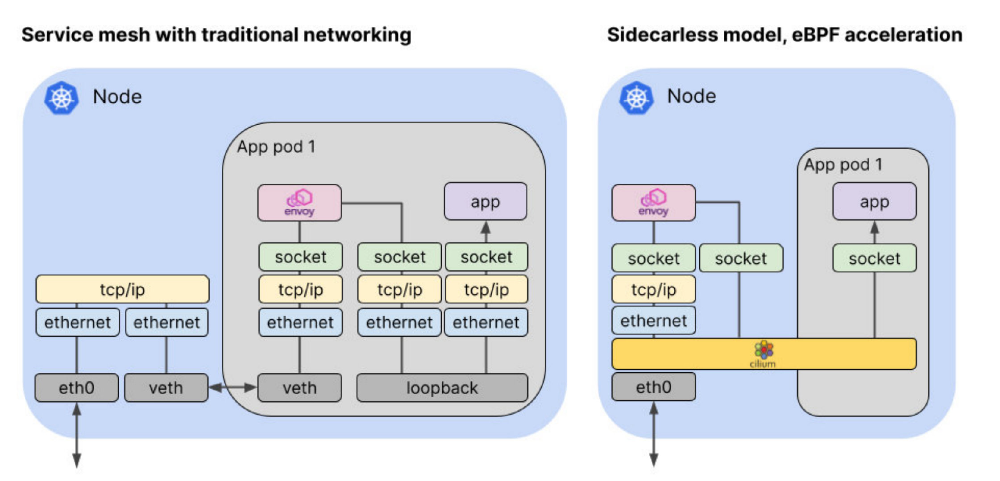

本文译自 How eBPF Streamlines the Service Mesh。
今天有几个服务网格的产品和项目，承诺简化应用微服务之间的连接，同时提供额外的功能，如安全连接、可观察性和流量管理。但正如我们在过去几年中反复看到的那样，对服务网格的兴奋已经被对额外的复杂性和开销的实际担忧所抑制。让我们来探讨一下 eBPF 是如何让我们精简服务网格，使服务网格的数据平面更有效率，更容易部署。
Sidecar 问题
今天的 Kubernetes 服务网格解决方案要求你在每一个应用 pod 上添加一个代理 sidecar 容器，如 Envoy 或 Linkerd-proxy。这是正确的：即使在一个非常小的环境中，比如说有 20 个服务，每个服务运行五个 pod，分布在三个节点上，你也有 100 个代理容器。无论代理的实现多么小和有效，这种纯粹的重复都会耗费资源。
每个代理使用的内存与它需要能够通信的服务数量有关。Pranay Singhal 写了他配置 Istio 的经验，将每个代理的消耗从 1GB 左右减少到更合理的 60-70MB。但是，即使在我们的小环境中，在三个节点上有 100 个代理，这种优化配置仍然需要每个节点 2GB 左右。

为什么我们需要所有这些 sidecar？这种模式允许代理容器与 pod 中的应用容器共享一个网络命名空间。网络命名空间是 Linux 内核的结构，它允许容器和 pod 拥有自己独立的网络堆栈，将容器化的应用程序相互隔离。这使得应用之间互不相干，这就是为什么你可以让尽可能多的 pod 在 80 端口上运行一个 web 应用 —— 网络命名空间意味着它们各自拥有自己的 80 端口。代理必须共享相同的网络命名空间，这样它就可以拦截和处理进出应用容器的流量。
引入 eBPF
eBPF 是一种内核技术，允许自定义程序在内核中运行。这些程序在响应事件时运行，有成千上万个可能的事件，eBPF 程序可以被附加到这些事件上。这些事件包括轨迹点、进入或退出任何功能（在内核或用户空间）或对服务网格来说很重要的 —— 抵达的网络数据包。
重要的是，每个节点只有一个内核；在一个节点上运行的所有容器（也就是所有的 pod）共享同一个内核。如果你在内核中添加一个 eBPF 程序到一个事件中，它将被触发，无论哪个进程引起该事件，无论它是在应用容器中运行还是直接运行在主机上。

这就是为什么 eBPF 对于 Kubernetes 中的任何一种 instrumentation 来说都是如此令人兴奋的技术 —— 你只需要在每个节点上添加一次 instrumentation ，所有的应用程序 pod 都会被覆盖。无论你是在寻求可观察性、安全性还是网络，由 eBPF 驱动的解决方案都可以在不需要 sidecar 的情况下对应用进行检测。
基于 eBPF 的 Cilium 项目（最近 以孵化级别加入云计算基金会）将这种 “无 sidecar” 模式带到了服务网格的世界。除了传统的 sidecar 模型，Cilium 还支持每个节点使用一个 Envoy 代理实例运行服务网格的数据平面。使用我们前面的例子，这就把代理实例的数量从 100 个减少到只有 3 个。

减少 YAML
在 sidecar 模型中，指定每个应用 pod 的 YAML 需要被修改以添加 sidecar 容器。这通常是自动化的 —— 例如，使用一个 mutating webhook，在每个应用 pod 部署的时候注入 sidecar。
以 Istio 为例，这需要标记 Kubernetes 命名空间和 / 或 pod，以定义是否应该注入 sidecar—— 当然也需要为集群启用 mutating webhook。
但如果出了问题怎么办？如果命名空间或 pod 的标签不正确，那么 sidecar 将不会被注入，pod 将不会被连接到服务网格。更糟糕的是，如果攻击者破坏了集群，并能够运行一个恶意的工作负载 —— 例如，一个加密货币矿工，他们将不太可能标记它，以便它加入服务网格。它不会通过服务网格提供的流量观察能力而被发现。
相比之下，在支持 eBPF 的无 sidecar 代理模型中，pod 不需要任何额外的 YAML 就可以被检测。相反，一个 CRD 被用来在集群范围内配置服务网格。即使是已经存在的 pod 也可以成为服务网格的一部分，而不需要重新启动。
如果攻击者试图通过直接在主机上运行工作负载来绕过 Kubernetes 编排，eBPF 程序可以检测并控制这一活动，因为这一切都可以从内核看到。
eBPF 支持的网络效率
支持 eBPF 的网络允许数据包走捷径，绕过内核的部分网络堆栈，这可以使 Kubernetes 网络的性能得到显著改善。让我们看看这在服务网格数据平面中是如何应用的。

在服务网格的情况下，代理在传统网络中作为 sidecar 运行，数据包到达应用程序的路径相当曲折：入站数据包必须穿越主机 TCP/IP 栈，通过虚拟以太网连接到达 pod 的网络命名空间。从那里，数据包必须穿过 pod 的网络堆栈到达代理，代理将数据包通过回环接口转发到应用程序。考虑到流量必须在连接的两端流经代理，与非服务网格流量相比，这将导致延迟的显著增加。
基于 eBPF 的 Kubernetes CNI 实现，如 Cilium，可以使用 eBPF 程序，明智地钩住内核中的特定点，沿着更直接的路线重定向数据包。这是可能的，因为 Cilium 知道所有的 Kubernetes 端点和服务的身份。当数据包到达主机时，Cilium 可以将其直接分配到它所要去的代理或 Pod 端点。
网络中的加密
如果一个网络解决方案能够意识到 Kubernetes 服务，并在这些服务的端点之间提供网络连接，那么它能够提供服务网格数据平面的能力就不足为奇。但这些能力可以超越基本的连接。一个例子是透明加密。
通常使用服务网格来确保所有的应用流量都是经过认证和加密的。这是通过双向 TLS（mTLS）实现的；服务网格代理组件作为网络连接的端点，并与其远程对等物协商一个安全的 TLS 连接。这种连接对代理之间的通信进行加密，而不需要对应用程序做任何改变。
但在应用层管理的 TLS 并不是实现组件间认证和加密流量的唯一方法。另一个选择是在网络层加密流量，使用 IPSec 或 WireGuard。因为它在网络层操作，这种加密不仅对应用程序完全透明，而且对代理也是透明的 —— 它可以在有或没有服务网格时启用。如果你使用服务网格的唯一原因是提供加密，你可能想考虑网络级加密。它不仅更简单，而且还可以用来验证和加密节点上的任何流量 —— 它不只限于那些启用了 sidecar 的工作负载。
eBPF 是服务网格的数据平面
现在，eBPF 在 Linux 生产发行版使用的内核版本中得到广泛支持，企业可以利用它来获得更有效的网络解决方案，并作为服务网格的更有效的数据平面。
去年，我代表 CNCF 的技术监督委员会，对服务网格领域的整合和清晰化做了一些 预测。在同一主题演讲中，我谈到 eBPF 有可能成为更多项目和更广泛部署能力的基础。这两个想法现在正结合在一起，因为 eBPF 似乎是服务网格数据平面的自然路径。